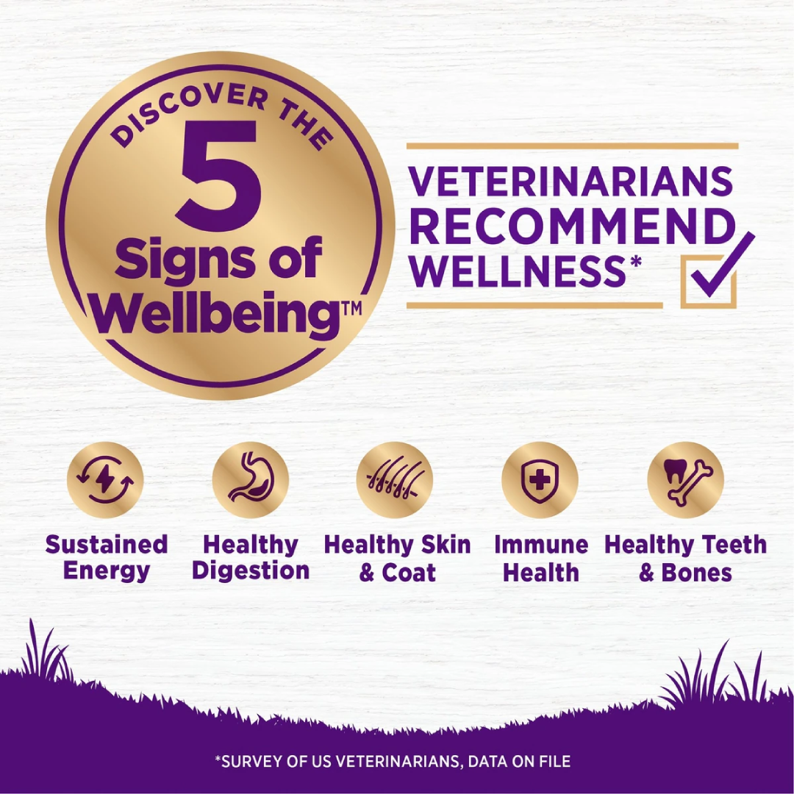
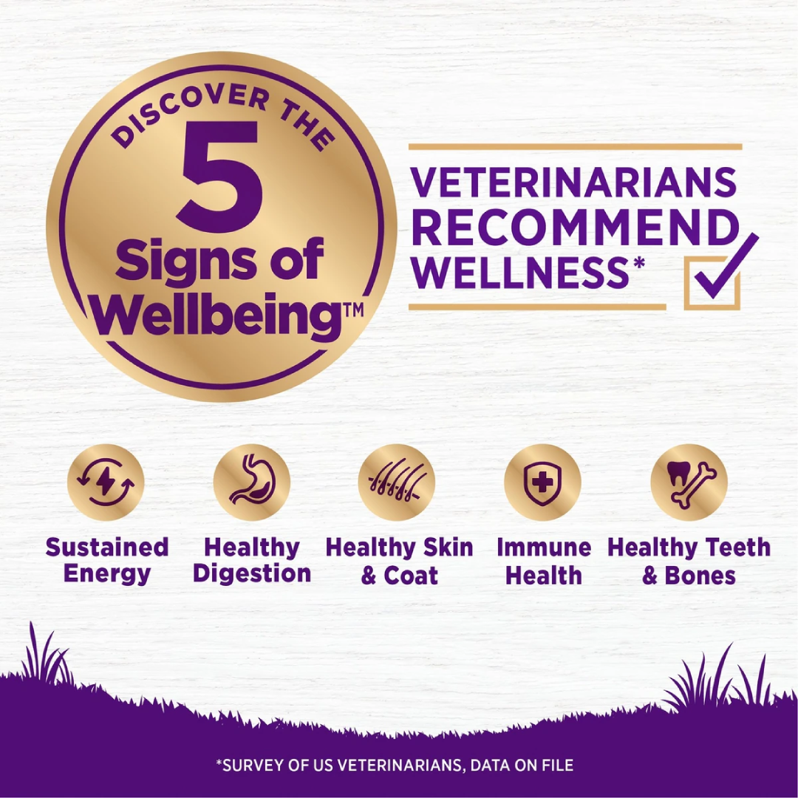

About This Item
Wellness Complete Health recipes are thoughtfully crafted to support the 5 Signs of Wellbeing. With every meal comes balanced, vet-recommended nutrition made with high-quality ingredients—so you can continue to live your best lives together.
This recipe is specially formulated with ingredients to help support:
- Sustained Energy: High-quality proteins provide the building blocks for lean muscle mass and energy
- Healthy Digestion: Probiotics and prebiotic fiber support digestive health
- Healthy Skin & Coat: Omega fatty acids from flaxseed and salmon oil
- Immune Health: Antioxidant-rich fruits and vegetables
- Healthy Teeth & Bones: Balanced calcium and phosphorus levels
Created by nutritionists, veterinarians, and animal lovers, this recipe provides an ideal balance of nature's finest ingredients, carefully selected to nourish and sustain your dog's wellbeing.
Ingredients
Deboned Chicken, Chicken Meal (source of Glucosamine and Chondroitin Sulfate), Brown Rice, Barley, Peas, Oatmeal, Oats, Dried Plain Beet Pulp, Chicken Fat, Salmon Meal, Natural Flavor, Flaxseed, Dried Chicory Root, Choline Chloride, Spinach, Broccoli, Vitamin E Supplement, Carrots, Parsley, Taurine, Apples, Blueberries, Kale, Mixed Tocopherols added to preserve freshness, Calcium Carbonate, Niacin, Zinc Proteinate, Ferrous Sulfate, Zinc Sulfate, Vitamin A Supplement, Iron Proteinate, Ascorbic Acid (Vitamin C), Thiamine Mononitrate, d-Calcium Pantothenate, Sodium Selenite, Pyridoxine Hydrochloride, Copper Sulfate, Manganese Sulfate, Riboflavin, Manganese Proteinate, Copper Proteinate, Biotin, Vitamin D3 Supplement, Yucca Schidigera Extract, Vitamin B12 Supplement, Folic Acid, Calcium Iodate, Dried Enterococcus faecium Fermentation Product, Dried Bacillus licheniformis Fermentation Product, Dried Bacillus subtilis Fermentation Product, Rosemary Extract, Green Tea Extract, Spearmint Extract.
This is a naturally preserved product.
Feeding Guidelines
Important: It is important to slowly transition your dog from their current diet as it takes a few days for the body to adapt to new nutrient levels. To transition, gradually mix in the new food over a 5-7 day period, increasing the amount of Wellness each day, so that you are feeding 100% Wellness by day 7.
| Dog Weight |
Daily Feeding Amount |
| 5-15 lbs |
1/2 - 1 1/4 cups |
| 15-25 lbs |
1 1/4 - 1 3/4 cups |
| 25-40 lbs |
1 3/4 - 2 1/2 cups |
| 40-60 lbs |
2 1/2 - 3 1/4 cups |
| 60-80 lbs |
3 1/4 - 4 cups |
| 80-100 lbs |
4 - 4 3/4 cups |
Combination Feeding: If feeding with Wellness wet food, reduce dry amount fed by 1/3 cup for every 6 oz of wet food.
Guaranteed Analysis
| Crude Protein |
Not Less Than 26.0% |
| Crude Fat |
Not Less Than 12.0% |
| Crude Fiber |
Not More Than 5.0% |
| Moisture |
Not More Than 11.0% |
| Calcium |
Not Less Than 1.25% |
| Phosphorus |
Not Less Than 0.90% |
| Omega-6 Fatty Acids* |
Not Less Than 3.25% |
| Omega-3 Fatty Acids* |
Not Less Than 0.50% |
| Glucosamine* |
Not Less Than 750 mg/kg |
| Chondroitin Sulfate* |
Not Less Than 250 mg/kg |
*Not recognized as an essential nutrient by the AAFCO Dog Food Nutrient Profiles.
Caloric Content: 3,576 kcal/kg, 340 kcal/cup
AAFCO Statement:
This food is formulated to meet the nutritional levels established by the AAFCO Dog Food Nutrient Profiles for maintenance of adult dogs.
 
